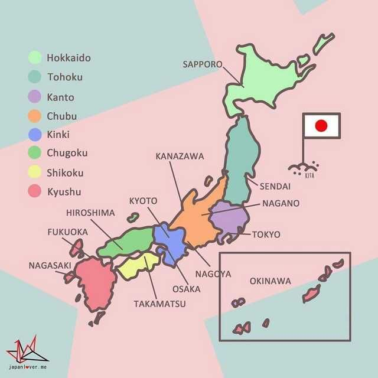
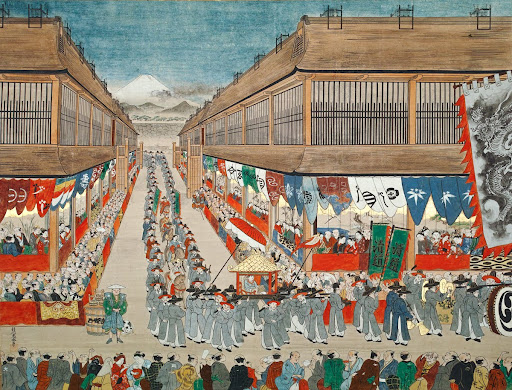
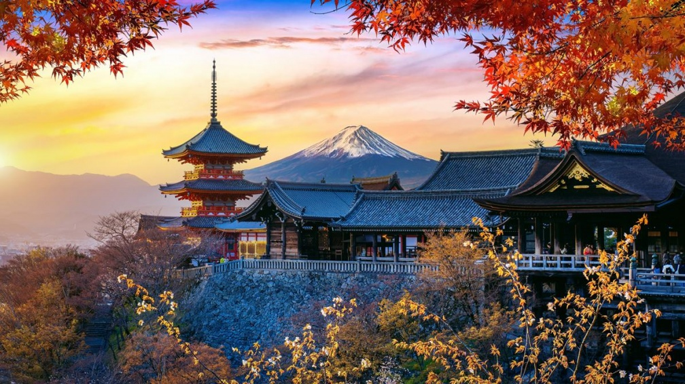
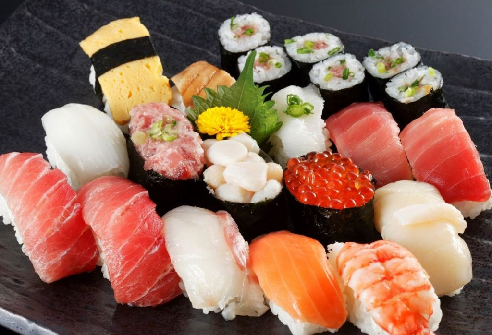

↑
首页
地理
文化
历史
景点
美食
探索日本的魅力
- 从文化到美食 用最轻松的方式认识这个有故事的地方 -
日本
攻略
日本
观光局
地理
位置：
日本位于东亚，由北海道、本州、四国、九州四大岛和约6,800个小岛组成。
面积：
约37.8万平方公里，国土狭长，南北跨度大。
气候：
温带季风气候，四季分明；北部寒冷多雪，南部温暖湿润。
地形：
山地占国土约70%，火山众多，如富士山；地震频繁。
邻国：
隔海与中国、韩国、俄罗斯相望。

文化
传统文化：
茶道、花道、和服、能乐、歌舞伎等经典文化。
宗教信仰：
神道教与佛教为主，部分人口信仰基督教或无宗教。
礼仪习惯：
注重谦逊与礼貌，鞠躬是常见礼节。
现代文化：
动漫、游戏、偶像文化、J-pop在全球有巨大影响。
节日：
新年（正月）、赏樱季（3-4月）、七夕、盂兰盆节、祭典（如祇园祭）。
历史
古代：
公元前3世纪左右进入弥生时代，开始稻作；7世纪形成大和政权，引入中国的汉字与佛教。
中世纪：
武士阶层兴起，幕府制度确立 (镰仓幕府、室町幕府、江户幕府)。
近代：
1868年明治维新，快速现代化并走向强国。
二战时期：
1941年参与太平洋战争，1945年战败并接受《波茨坦公告》。
现代：
战后实行和平宪法，经济高速发展，成为世界第三大经济体。


景点
东京•Tokyo：
东京塔、浅草寺、涩谷、秋叶原、新宿御苑
京都•Kyoto：
清水寺、金阁寺、伏见稻荷大社、岚山
大阪•Osaka：
大阪城、道顿堀、日本环球影城、心斋桥
北海道•Hokkaido：
富良野花田、小樽运河、札幌雪祭、旭川动物园
其他：
富士山、冲绳海滩、奈良东大寺、松岛
美食
寿司•Sushi：
生鱼片与醋饭的完美结合，起源于江户时代的传统佳肴，享誉全球。
拉面•Ramen：
来自各地的多样风味：豚骨的浓厚，酱油的醇香，味噌的醇厚。
天妇罗•Tempura：
外酥里嫩的炸物，配以特别调制的蘸汁。
和牛•Wagyu：
被誉为世界上最细腻的牛肉，油花丰富，入口即化。
章鱼烧•Takoyaki：
章鱼块加面糊和葱花做成，外脆内软的大阪小吃。
和菓子•Wagashi：
传统甜点，以糯米和红豆为主，色彩斑斓。
